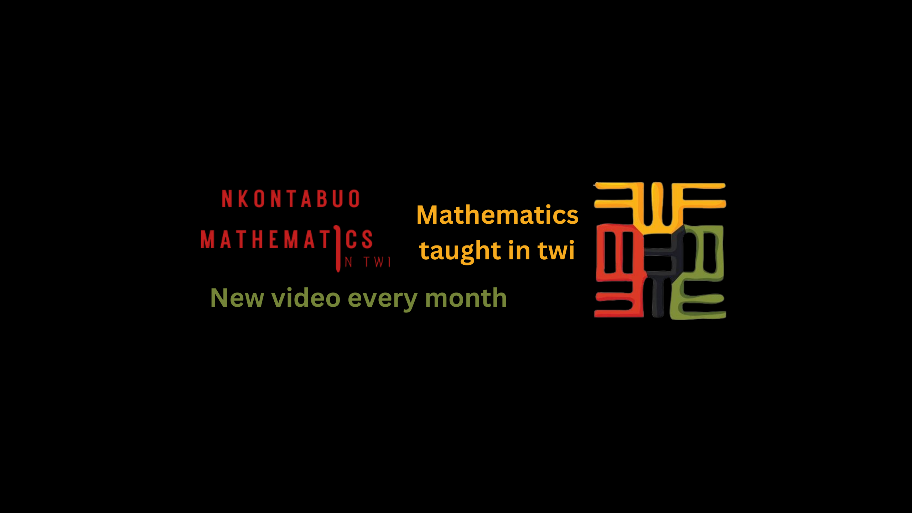

Empowering Math Learning in Twi
"Akwaaba!! I am Mensah Godfred, and this website's purpose is to revolutionize the teaching of mathematics by delivering it in Twi, a widely spoken language in Ghana. Mathematics is a vital subject, yet the gap between teaching and learning persists. This initiative aims to bridge this gap by imparting mathematical knowledge to the younger generation in Twi, making it more accessible and comprehensible, ultimately fostering a stronger foundation in mathematics.

Akwaaba!
"We invite all mathematics enthusiasts who appreciate the beauty of numbers and logic to join our vibrant community where the language of instruction is Twi."
Join Us